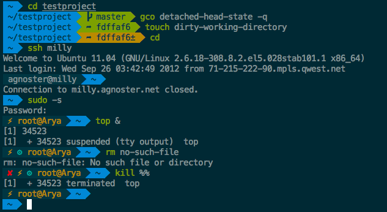

Enable C Extension for gensim on Windows
For these days, I’m working on some text classification works, and I use gensim’s doc2vec function.
When using gensim, it shows this warning message:
C extension not loaded for Word2Vec, training will be slow.
I search this on Internet and found that gensim has rewrite some part of the code using cython rather than numpy to get better performance. A compiler is required to enable this feature.
I tried to install mingw and add it into the path, but it's not working.
Finally, I tried to install Visual C++ Build Tools and it works.
If this output a none -1 digit, then it's fine.
from gensim.models import word2vec print(word2vec.FAST_VERSION)
Some Useful Shell Tools
Here are some shell tools I use, which can boost your productivity.
Prezto
A zsh configuration framework. Provides auto completion, prompt theme and lots of modules to work with other useful tools. I extremely love the agnoster theme.

Fasd
Help you to navigate between folders and launch application.
Here are the official usage example:
v def conf => vim /some/awkward/path/to/type/default.conf j abc => cd /hell/of/a/awkward/path/to/get/to/abcdef m movie => mplayer /whatever/whatever/whatever/awesome_movie.mp4 o eng paper => xdg-open /you/dont/remember/where/english_paper.pdf vim `f rc lo` => vim /etc/rc.local vim `f rc conf` => vim /etc/rc.conf
pt
A fast code search tool similar to ack.
fzf
A great fuzzy finder, it can also integrate with vim by fzf.vim

thefuck
Magnificent app which corrects your previous console command.

Start
Over the years, I have read so many programmers’ blogs, which has helped me a lot. Now I think it’s the time to start my own blog.
I hope this can enforce myself to review what I have learned, and it would even be better if someone can benefit from it.